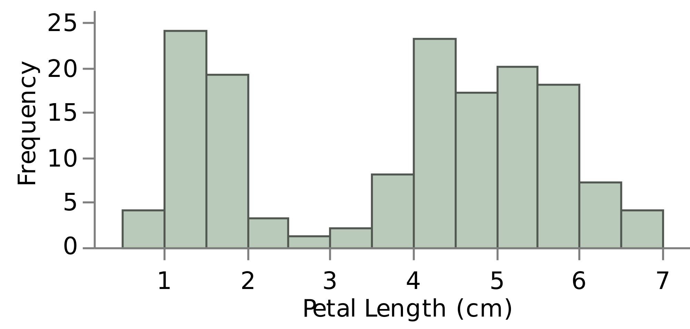

Descriptive Statistics - Exercises
Exercise 1
Which of the below are measures of center (select all that apply)?
Mean - Standard deviation - Variance - Median - Inter-quartile Range - Mode - Range - Maximum
Exercise 2
Calculate the mean for this values: 5, 8, 15, 7, 10, 22, 3, 1, 15
Find the median of the data
Exercise 3
If we have the data: 5, 8, 15, 7, 10, 22, 3, 1, 15, 2
What is the mean and the median?
Exercise 4
We want to summarize the number of dogs our friends have into a single number. We will use the measures of center for this problem. Ashley has 1 dog, Steve has 1 dog, Jeff has 2 dogs, Kylie has 3 dogs, and Lisa has 8 dogs.
There is no best measure of center so we need to try all three to see what makes sense.
What is the mean, median, and mode for the number of dogs our friends have?
Exercise 5
Which of the following sentences are correct with regards to our measures of center?
- The mode is the middle number in the dataset when numbers are rank ordered
- The median is the middle number in the dataset when numbers are rank ordered
- The mean is always the best measure of center for any dataset
- The mean is always less than the median
- The median is always the best measure of center for any dataset
- The mode is always the best measure of center for any dataset
Exercise 6
If we have the data: 5, 8, 15, 7, 10, 22, 3, 1, 15
What is the mode?
Exercise 7
If we have this datasets: 8, 12, 32, 10, 3, 4, 4, 4, 4, 5, 12, 20
| First dataset | 8 | 12 | 32 | 10 | 3 | 4 | 4 | 4 | 4 | 5 | 12 | 20 |
|---|---|---|---|---|---|---|---|---|---|---|---|---|
| Second dataset | 5 | 8 | 15 | 7 | 10 | 22 | 3 | 1 | 15 | 10 |
What is the mean, the median and the mode?
Exercise 8
If we have the data: 1, 5, 10, 3, 8, 12, 4, 1, 2, 8
| First dataset | 1 | 5 | 10 | 3 | 8 | 12 | 4 | 1 | 2 | 8 |
|---|---|---|---|---|---|---|---|---|---|---|
| Second dataset | 1 | 5 | 10 | 3 | 8 | 12 | 4 | 2 | 8 |
Find the 5 numbers summary: Minimum, Maximum, Q2, Q1 and Q3.
Find the range of this data.
Find the IQR (Inter-quartile Range)
Exercise 9
If we measure the variance associated with our sales in dollars for each month for 3 years, what are the units associated with the variance?
Dollars - Years - Dollars per Year - Dollars squared - Dollars per month
Exercise 10
For the following set of data provide the value of the variance and standard deviation.
1, 5, 10, 3, 8, 12, 4
Exercise 11
Assume d1 and d2 are datasets both measured in the same units. We know that the standard deviation of d1 is 5 and the variance of d2 is 36, which of the following are certainly true. Mark all that apply.
Remember the Standard Deviation is the square root of the variance. So if the Variance is 4 the Standard Deviation would be 2
- The mean is larger for d1 than for d2
- The variance for d2 is larger than for d1
- The standard deviation for d2 is larger than for d1
- The median for d2 is larger than for d1
- The range for d2 is larger than for d1
Exercise 12
If a dataset has a standard deviation of zero, which of the following MUST be true?
- All the points must be zero
- All the data points must be the same
- We made a calculation error because it is not possible for the standard deviation to be zero
Exercise 13
For each of the below: If the statement is true, mark the box next to the statement.
- If two datasets have the same variance, they will also have the same standard deviation.
- If I have two investment options with the same mean return, it really doesn't matter which I invest in
- If I have two investment options with the same standard deviation associated with the rteurn, they will also have the same possible return
Exercise 14
Consider we have two investment opportunities:
| Year 1 | Year 2 | Year 3 | Year 4 | Year 5 | Year 6 | |
|---|---|---|---|---|---|---|
| Investment 1 | 5% | 5% | 5% | 5% | 5% | 5% |
| Investment 2 | 12% | -2% | 10% | 0% | 7% | 3% |
The returns for 6 consecutive years for each investment are shown above. Use this information to answer the questions below.
- What is the mean return for Investment 1?
- What is the mean return for Investment 2?
- Using the information above tell which are the correct statements.
- The risk associated with investment 1 is lower than the risk associated with investment 2
- The standard deviation associated with investment 1 is smaller then the standard deviation associated with investment 2
- Knwoing the mean return amount across all the years for each investment provides us with all information necessary to understand which investment we should choose
- Which of the above two investments has the best opportunity of earning more than 7%?
Exercise 15
For the following dataset: 15, 4, 3, 8, 15, 22, 7, 9, 2, 3, 3, 12, 6
Determine (n) the count dataset, the median, the mean, the mode, the first quartile and the second quartile.
Determine the range, the interquartile range (IQR), the minimum, the maximum, the variance and the standard deviation.
Exercise 16
Match the distribution shape with the correct relationship in comparing the mean to the median.
Cannot be determined - Mean is greater than the Median - Mean is less the Median - Mean is equal to the Median
| Symmetric | Left-skewed | Right-skewed |
|---|---|---|
Exercise 17
Which are the correct statements?
- For every dataset the mean equals the median, so every dataset is normally distributed
- Normally distributed data must have a mean equal to the median
- All data sets are normally distributed
- Data must be distributed either right-skewed or left-skewed
- Histograms and box plots are both used to plot quantitative data. They cannot be used to plot categorical data.
- A box plot relates directly to the 5 number summary
Exercise 18
In the below image, we have three box-plots. Each box-plot is for a different Iris flower: setosa, versicolor, or virginica. On the y-axis, we are given the sepal length.
Notice that virginica has an outlier towards the bottom of the plot. Therefore, the minimum is not given by the bottom line here; rather, it is provided by this point.
From the image above try to determine which sepal have:
- The largest range
- The smallest inter-quartile range
- The median approximately 5
- The third quartile is approximately 6.3
- An approximately symmetric box plot
- The largest sepals on average
From the statements below, tell which ones are correct.
- All Setosa flowers have a shorter sepal length than Versicolor.
- All Virginica flowers have larger sepal length than Setosa flowers
- More than 75% of the Virgnica flowers have a larger sepal length than the largest Setosa flower
- More than 50% of Setosa flowers have larger sepal length the the shortest Versicolor flower
- More data was collected on Versicolor flowers than on Virginica flowers
Exercise 19
The following plot will be used to answer the questions below:

- What is the name of the above plot? Bar chart - Box plot - Histogram - Pie chart
- What is the shape of the above distribution? Right skewed - Left skewed - Symmetric - Bi-modal
Use the below image to assist with answering the next three questions.
- What is the name of the above plot? Bar chart - Box plot - Histogram - Pie chart
- What is the shape of the above distribution? Right skewed - Left skewed - Symmetric - Bi-modal
- Select the right statement from the following ones?
- The mean is less than the median
- The mean is greater then the median
- The mean is approximately equal to the median
- It is impossible to tell the relationship between the mean and the median
Exercise 20
Let the histogram on the left be Histogram 1 and the histogram on the right be Histogram 2.
Pay attention to the scale of these two graphs. The first is dealing with a lot higher numbers.
Correctly match the histograms to the statements that are true about each.
- Mean is greater than the median
- Data has higher variance
- Binwidth is equal to 0.5
- The range is approximately 5.5
- Distribution is left-skewed
- The mean is approximately equal to the median
Exercise 21
As the head of public health, you conduct a weekly census across age-groups of the number of cases of flu reported in your area.
By hand, compute the mean and the median by week.
Which do you think, given these particular data, is the most useful measure of central tendency and why?
| From 1/12 - 7/12 | From 8/12 - 15/12 | From 16/12 - 23/12 | |
|---|---|---|---|
| 0-4 years | 12 | 14 | 15 |
| 5-9 years | 15 | 12 | 14 |
| 10-14 years | 12 | 24 | 21 |
| 15-19 years | 38 | 12 | 19 |
| Mean | |||
| Median |
Exercise 22
You're one of the outstanding young strategists for Big Boy Airlines and are really curious to compare the number of passengers flying in the mornings versus the evenings out of the Kansas City, Missouri; Washington, DC; and Providence, Rhode Island, hubs for the last 2 days of last week.
Compute the descriptive statistics that you will use in tomorrow's presentation to your boss and provide a few sentences of summary.
| Thursday | Friday | Thursday | Friday | Thursday | Friday | |
|---|---|---|---|---|---|---|
| To Kansas | To Kansas | To Washington | To Washington | To Providence | To Providence | |
| Number of passengers (Morning) | 258 | 251 | 303 | 312 | 166 | 176 |
| Number of passengers (Evening) | 312 | 331 | 321 | 331 | 210 | 274 |